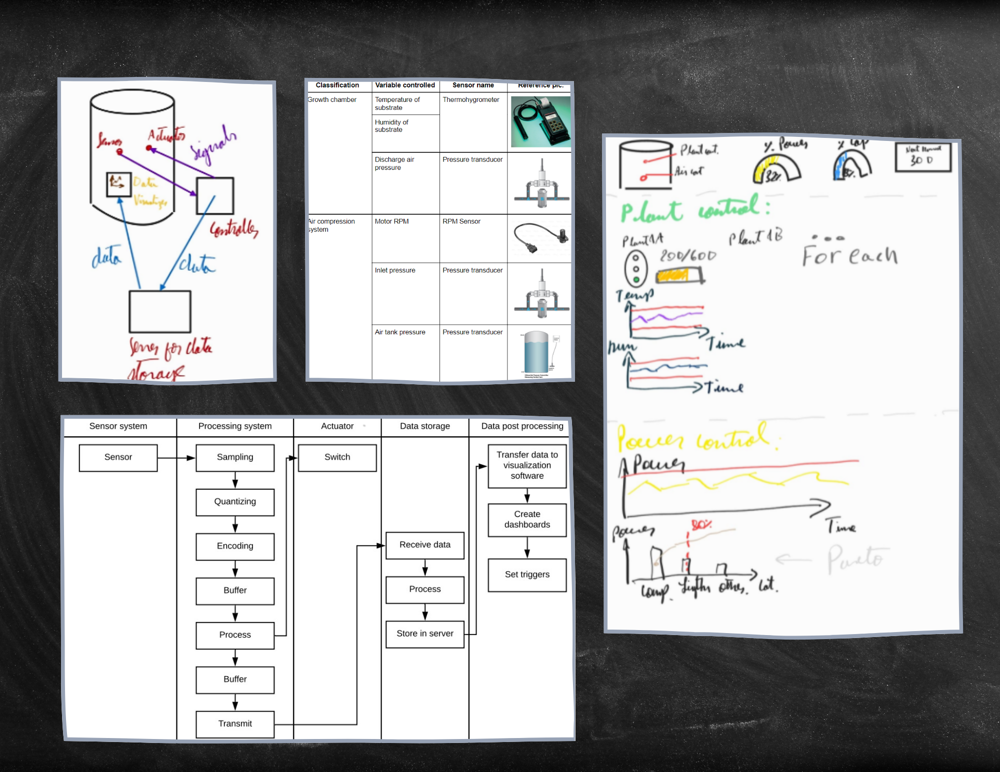
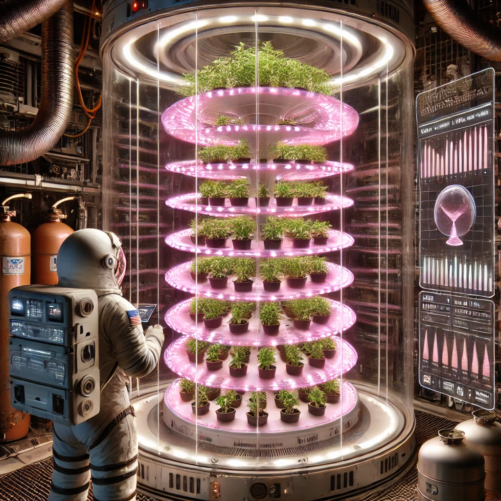

Winner of NASA Space Apps Challenge Peru 2021: Have Seeds, Will Travel
This project was one of the most challenging yet rewarding experiences of my career. It involved significant effort to work with new people, take on a leadership role, and participate in my first contest of this scale. I had the opportunity to immerse myself in data analysis and data science, while leveraging my background in mechanical engineering. The impact of this project extended internationally, being recognized by the University of San Marcos, the US Embassy, and NASA.
Our team was selected among 1600 participants, winning the competition and receiving a nomination to compete globally.
What is the NASA Space Apps Challenge?
The NASA Space Apps Challenge is an annual global hackathon where participants collaborate to solve challenges related to Earth and space. Organized by NASA and supported by international space agencies, teams use NASA's open data to tackle issues like space exploration, climate change, and technology.
The Challenge: Have Seeds, Will Travel

In the 2021 edition, we took on the "Have Seeds, Will Travel" challenge. This focused on finding innovative ways to grow plants for long-duration space missions, exploring techniques that allow plants to thrive in harsh space conditions with minimal resources such as water and nutrients. Our team was perfectly equipped for this challenge.
About the Team

Our team consisted of two agronomists from UNAM, a designer from PUCP, and myself, a mechanical engineer from PUCP. Each member brought unique expertise to the table, helping us develop a comprehensive solution.
Solution Developed
Agronomy and Crop Science
The agronomists selected crops based on their nutritional value, fast growth cycles, and adaptability to space conditions. They designed a reusable growth media and a water recycling system that captured and reused water transpired by plants through condensation.

Mechanical Engineering and Control Systems
I developed the control systems for the plant growth chambers, managing pressure, temperature, and humidity. Sensors were used to monitor these variables and integrated into a data system to allow astronauts to track plant growth via a dashboard (system similar to Graphana).
Design and 3D Modeling
Our designer created a 3D model integrating all components into a cohesive system, showcasing how it would function during space missions and providing an efficient, user-friendly design.

Final Design and Benefits
The final product was a fully integrated system designed to support small, fast-growing crops in space. It was efficient, easy to maintain, and adaptable. The potential applications extended beyond space exploration, offering solutions for sustainable agriculture on Earth, especially in regions with limited resources.
Repercussions

Andina News: Young Peruvians design innovative system to plant in space
The article announces the finalists of the NASA Space Apps Challenge 2021 in Peru, where 12 teams were selected from nearly 200 projects. Among the notable projects are initiatives for sustainable agriculture in space, virtual museums on space exploration, and plastic waste management solutions. The final three teams will represent Peru in the global competition. A public voting process will also determine an honorable mention.

TV Peru: Young Peruvians design a system to plant in space
A team of young Peruvians, including Edwin Santos Vidal, developed a system for growing plants in space, combining compact design and efficient resource use. Their project, part of the Space Roots team, won the Lima edition of NASA’s Space Apps Challenge 2021 and will represent Peru globally. The system includes growth chambers, sensors, and software for easy monitoring, aimed at supporting long-term space missions.

Gestion: The 12 Peruvian scientific facts that stood out in 2021
The Twin Paradox, Paulet X and Space Roots projects, made up of Peruvian students and researchers, represented our country in the international stages of the NASA Space Apps 2021 event, which was held virtually.